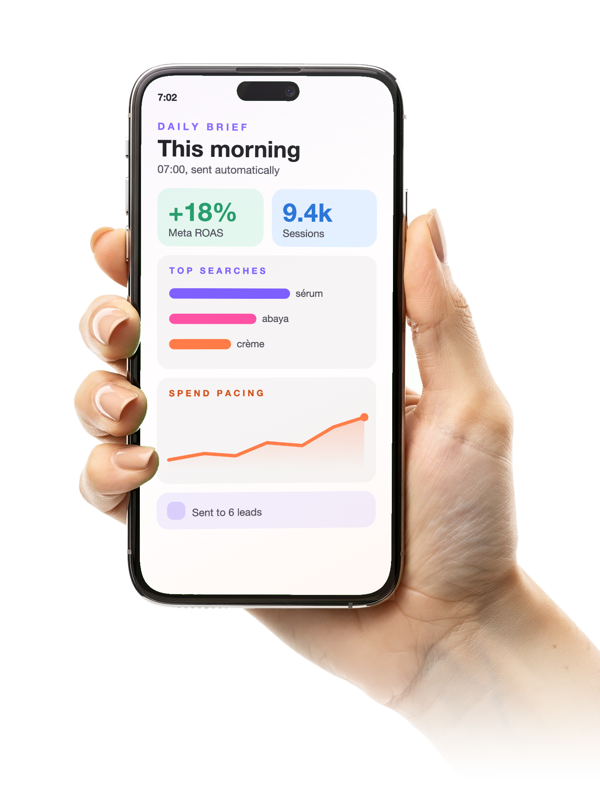

A practical look at how Claude can boost the team's output.
Everyone here already knows what needs to get done. What eats the week is the manual work between the idea and the finished thing: pulling data, formatting reports, building decks, first drafts. That is exactly what AI closes today.
Everything on the next slides is already running inside Wasal. No pilot, no vendor promise, built and used daily.
Daily Meta Ads and Mixpanel brief sent automatically every morning.
Weekly Instagram and social report published live.
In-app search intent dashboard showing what customers actually look for.
A new executive daily digest is being built right now, the same kind of tool this workshop is about.
Wasal Friday campaign KPI dashboard tracking GMV, orders, CAC and affiliate performance against targets.
Out-of-home billboard inventory mapped for media planning.
Both built and shipped by one person, with AI as the engineering partner.
Search intent analysis surfaces the exact products and brands customers search for, feeding catalog and campaign decisions.
Ad performance audits catch underperforming creative faster than a manual weekly review.
About 135 seconds per product manually versus about 11 seconds with an AI-assisted workflow. At 1 million units, that is roughly 4 staff instead of 44 for the same output.
AI is not one tool. Picking the right one for the task is most of the productivity gain.
A conversation, best for quick single-step work.
Takes a folder and a plain-language goal and executes the whole task on its own, best for messy multi-step work like turning scattered notes into a finished report.
Claude in Excel builds formulas and cleans data inside the sheet.
Claude in PowerPoint turns an outline into a formatted deck.
Claude in Chrome browses and acts on websites.
Claude Tag lets anyone tag Claude directly in Slack, no new app to open.
The agentic tool actually used to build the dashboards and automations shown earlier.
Not something most of this room needs to touch, but almost everything in the portfolio started as a plain-language request to it.
One thing happening in real time beats ten slides.
Generating the executive daily digest end to end.
A Cowork task turning a stack of screenshots into a formatted report.

You do not need a project or a budget to start. You need one recurring task worth automating.
Plan and data-handling settings differ by tier, involve IT for anything touching customer or financial data.
Treat first drafts as drafts, review before anything goes external.
Start with low-risk, high-repetition tasks.
Each function picks one recurring task to hand to AI this month. Check back in three weeks with results.